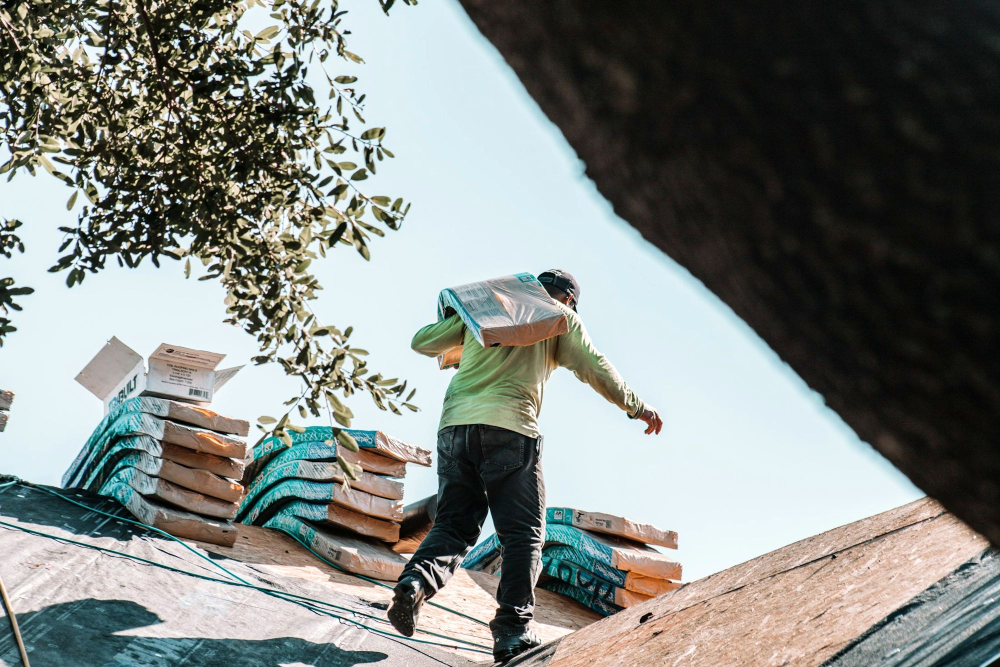
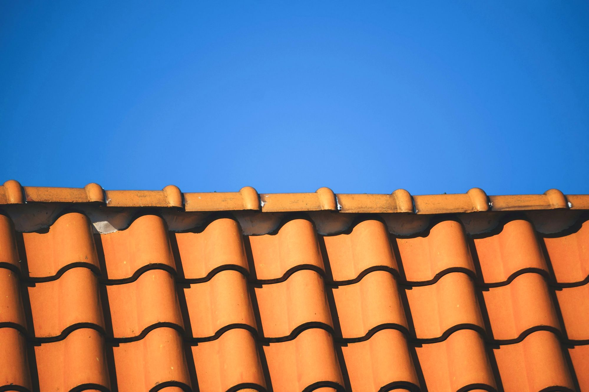
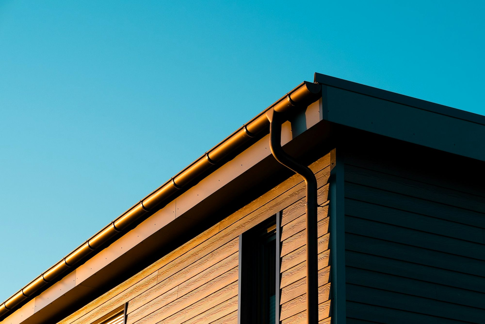

Huit métiers, un seul toit.
Du dépannage après une tempête à la charpente neuve, voici ce que fait Dôme Toiture.
01
Couverture
Dépose et pose de tuiles, ardoises ou bac acier, réparation d'une partie de toit ou réfection complète.
02
Zinguerie
Gouttières, descentes, rives, noues et solins : l'eau doit partir où on l'a décidé.
03
Fenêtre de toit
Création ou remplacement, avec l'étanchéité reprise autour de l'ouverture.
04
Isolation de toiture
Une couche de protection de plus entre les combles et la couverture.

05
Charpente
Réparation, renfort ou création de charpente traditionnelle.
06
Extension et surélévation
Agrandir la maison en gardant la toiture cohérente avec l'existant.

07
Terrasse et bardage
Aménagement extérieur en bois, et habillage de façade.

08
Dépannage de toiture
Fuite, tuiles envolées après un coup de vent : on intervient d'abord pour mettre hors d'eau.